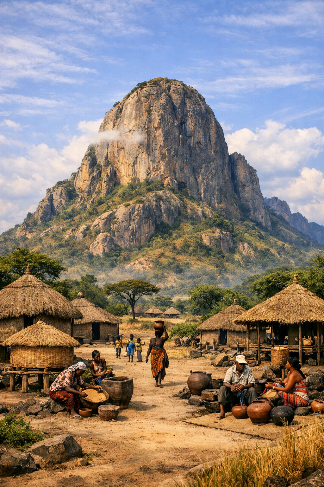
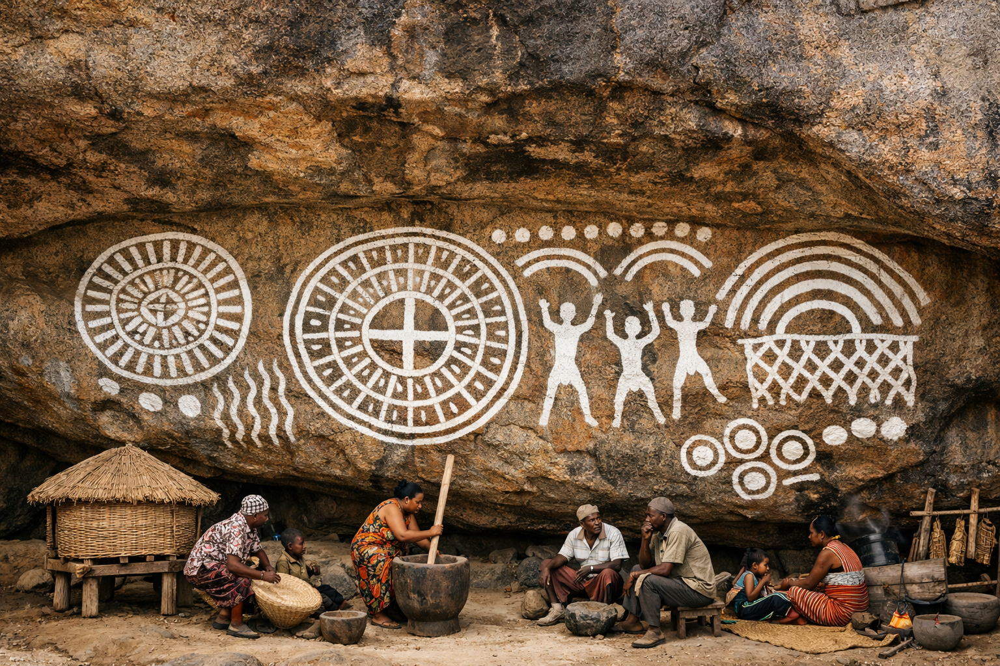

Our neighbour, our pride — the most important prehistoric rock art in Uganda, just 8 km from the Akol homestead in Nyero Subcounty.
The Nyero Rock Paintings are located in Kumi District, 8 km west of Kumi town along the Kumi–Ngora road — within Nyero Subcounty itself, the very subcounty the Akol family calls home. First documented in 1913 and added to Uganda's UNESCO World Heritage Tentative List in 1997, the paintings are executed in red and white pigments on six granite rock shelters, dominated by concentric circles, canoe shapes, and geometric motifs.
The rock shelters are believed to have been sacred places used for rain-making ceremonies, offering to the gods, and clan prayers. Oral tradition records that the Iteso people would journey from far and wide to pray at these sites. Traces of smoke from ancient sacrifices are still visible in some of the caves today.
Plan a Visit via the Akols →
Nyero 2 — Main Shelter Panelimg/rock.pngRock shelters across the Nyero inselberg
Years old; some estimates 12,000 years
Added to UNESCO Tentative World Heritage List
UGX — featured on Uganda's 1,000 shilling note
An artistic SVG recreation of the Nyero 2 main panel, showing the characteristic concentric circles, canoe shapes, and geometric motifs painted in red pigment on granite.
Artistic recreation of rock art motifs — concentric circles, canoes, U-shapes & dots

Nyero 1 — White Circles Shelterimg/painting0.pngA small rock shelter formed by a low overhanging rock perched above three supporting rocks. On the outer edge are six sets of concentric circles painted in white pigment, together with acacia-pod shapes. These white geometric forms are among the most striking on the site and are believed to have been used in sacred rituals for rain-making and fertility.
The most important and impressive shelter. A 10-metre high vertical rock forms the back wall, with an overhang created by an enormous boulder estimated to weigh at least 20,000 tonnes. Over 40 red-painted images include the famous "canoe" shapes unique to this site, concentric circles as the dominant motif, U-shapes, vertical divided sausage shapes, lines, and dots. The overhang protects the paintings from direct rain, contributing to their exceptional preservation.
About 8 minutes' walk from Nyero 2. Formed by a large boulder perched on supporting rocks with no standing room — visitors must crouch to reach the paintings. The ceiling shows white concentric circles surrounded by double curved designs and double lines divided into smaller compartments. This was the sacred prayer place where the Iteso made offerings to the gods for rain, health, blessings, and childbirth. Its concentric circle symbol was adopted by the Uganda Museum as their official logo.
Nyero 4, 5, and 6 are smaller shelters on the south-western and western sides of the inselberg, each with additional geometric and red finger-painted motifs. A guided tour at the entrance gate covers all six.